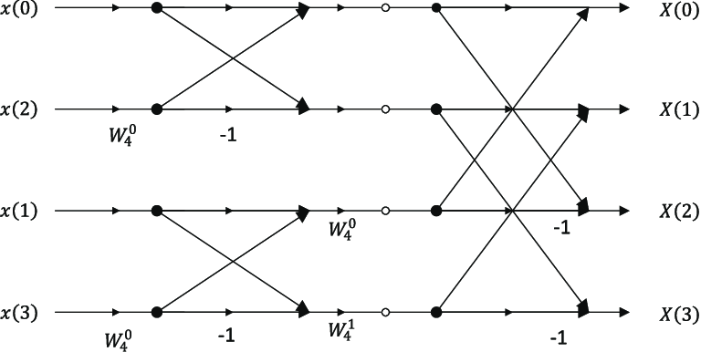

DFT of DITFFT
In this topic we will discuss about 8 point and 4 point DFT of DITFFT in FFT.
8 point DFT of DITFFT
DFT of DITFFT structures takes input as bit reversed order and output as normal order.These structures can be obtained or solved by using butterfly diagram and its formulas.First we will break 8 point DFT into 4 points and then to 2 points DFT.the formula of DITFFT's DFT 8 point is
Xm(p) = Xm-1(p) + Wnr * Xm-1(q)
Xm(q) = Xm-1(p) - Wnr * Xm-1(q)

Enter the input sequence :
4 point DFT of DITFFT
This 4 point DFT of DITFFT is same as 8 point, but here we will just break 4 point DFT into 2 points DFT by using the same butterfly diagram and the above formulas.
